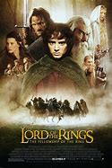
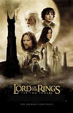

|  |
1.
The Lord of the Rings: The Fellowship of the Ring
(2001)
2hr 58min | Adventure, Fantasy
 8.8/10
 92
Official Trailer
|
The future of civilization rests in the fate of the One Ring, which has been lost for centuries. Powerful forces are unrelenting in their search for it. But fate has placed it in the hands of a young Hobbit named Frodo Baggins, who inherits the Ring and steps into legend. A daunting task lies ahead for Frodo when he becomes the Ringbearer, to destroy the One Ring in the fires of Mount Doom where it was forged. |
Elijah Wood
Viggo Mortensen
Ian McKellen
Liv Tyler
Sean Astin
|
Peter Jackson
|
|  |
2.
The Lord of the Rings: The Two Towers
(2002)
2hr 59min | Adventure, Fantasy
8.7/10
87
Official Trailer
|
The Fellowship is torn apart. Sauron's power is growing stronger. While venturing on to Mordor, Frodo and Sam come across the grotesque creature Gollum, who is forever consumed by the Ring's power. Meanwhile, Aragorn, Gandalf, Legolas and Gimli meet up with new allies in the Plains of Rohan. Together, they must work to defend the people of Rohan against Sauron's puppet Saruman as he unleashes his armies from Isengard. All the while, Sauron prepares to launch an attack on Gondor. The War for the Ring begins here. |
 |
3.
The Lord of the Rings: The Return of the King
(2003)
3hr 21min | Adventure, Fantasy
8.9/10
94
Official Trailer
|
The Fellowship divides to conquer as Frodo and Sam, with the help and hindrance of Gollum, continue their way to Mount Doom. Gandalf and Pippin ride to Minas Tirith to help defend Gondor while Merry remains with Éowyn and the other Rohan fighters. Aragorn, Legolas, and Gimli seek aid from those that live in the Cursed Mountains. All of these battles have one goal in mind: distract the Eye of Sauron and buy Frodo a little more time to destroy the One Ring. |